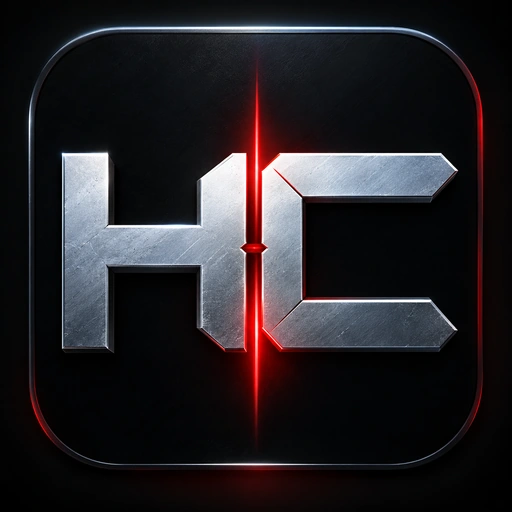
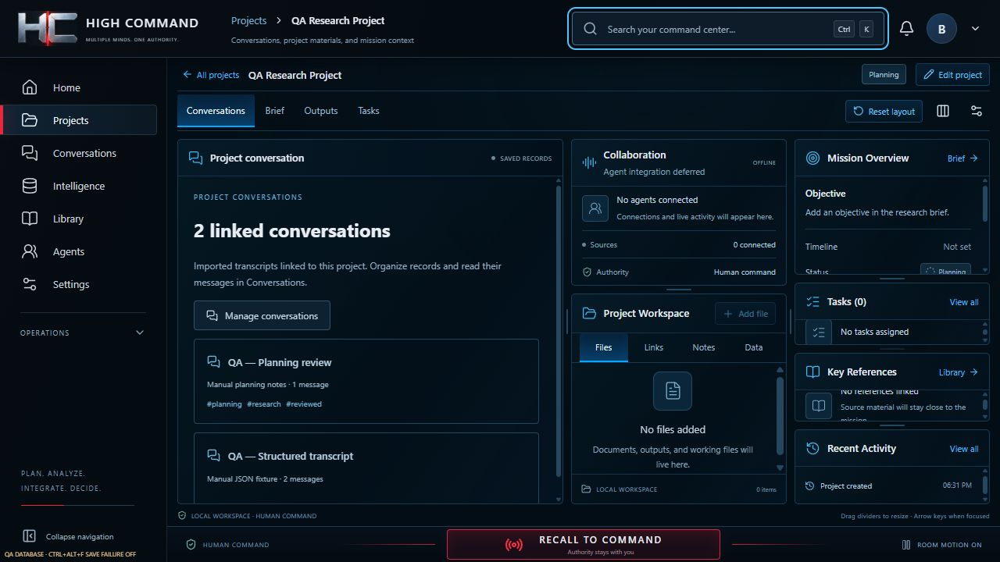
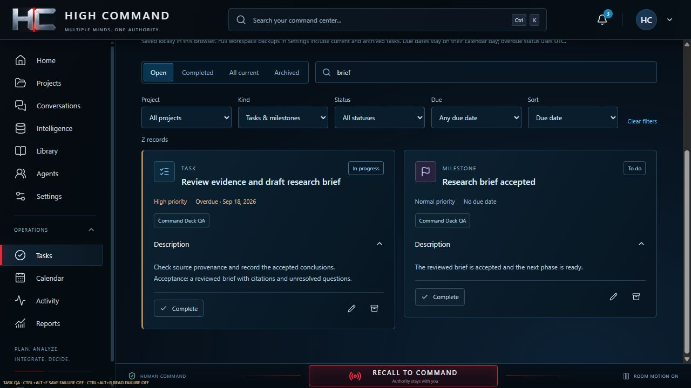

Define the project
InputObjectives + source context
ProcessSaved project and brief
OutputA workspace to return to
Record objectives, status, priorities, and a brief before organizing the work. SQLite retains the project and its history.

06 / Desktop softwareI built High Command for work that spans several AI tools. It keeps briefs, conversations, tasks, and milestones in one Windows workspace, with local storage and recovery after interruptions. A separate test build connects Codex, Google Antigravity, and Grok. I also built reviewed handoffs between assistants and tested communication and task completion with one to four assistants on the same research assignment. High Command is a private Windows alpha.
I created this under PhalAInx, my independent software studio.
Project at a glance ↓

A project can leave its brief in one place, its AI conversations in several others, and its next steps in a separate task list. I built High Command to bring those records together. The user can return to a project, find the conversation behind a decision, see what remains to be done, and recover work after an interruption.
I designed and built the Windows interface, the local storage service, and the connections between projects, conversations, tasks, and milestones. The adjustable Command Deck brings those records into one view. Search, tags, and Activity help the user find and resume earlier work.
I also built the animated Home, interactive monitors, optional ambient sound, and four local voice packs that announce actual workspace events. Motion and sound have separate controls, and the animation pauses when the app is minimized.
I built imports that save their progress and resume after a pause or interruption. The reader loads long conversations in sections, while copying or exporting a whole message checks that all its text is included. Original messages stay separate from the tags and project links added later.
I built revision checks so an old editing window cannot silently overwrite a newer save. Related records save together or roll back together. Full SQLite backups preserve the workspace, and failed or uncertain operations remain visible when the user returns.
| Layer | Implemented tools and purpose |
|---|---|
| Interface | React, TypeScript, and Vite build the shared interface, forms, navigation, and adjustable panels. |
| Windows host | Tauri 2 runs the interface in WebView2, Microsoft’s embedded web renderer, and connects it to native commands and file dialogs. |
| Application services | Rust validates records and runs database operations separately from interface rendering. |
| Local storage | SQLite stores projects, ordered messages, tags, links, tasks, milestones, settings, and migration receipts. The browser preview uses a separate IndexedDB workspace. |
I brought OpenAI Codex, Google Antigravity, and xAI Grok into one Windows test build. The user selects a provider and model, sends a request, and watches the reply arrive. Each conversation retains its own messages and settings in the local database. Antigravity provides the Gemini connection.
I tested switching between all three through the desktop controls, reconnecting, and closing and reopening the application. Their messages, model selections, and saved action records remained intact. This build supports one provider connection and one active request at a time.
I built a record of the command an assistant requested, the user’s decision, its output, and the outcome. I also moved Stop out of the database-saving path after finding that a blocked save could delay cancellation. That lets HC interrupt its running command while storage is unavailable, then finish its recovery record when storage returns.
In the combined provider build, Codex and Grok passed the running-command Stop check. Antigravity returned replies and preserved history, but rejected the command before approval, so that build has not demonstrated Stop for Antigravity. I keep this compatibility issue distinct from the completed text-conversation features.
I built a workflow that assembles a task’s requirements, relevant project context, and the selected assistant’s instructions for the user to inspect before sending. Once the first assistant finishes, HC saves its answer as a versioned output. The user can then send that exact answer and its requirements to a second assistant for review.
This keeps a review attached to the version it examined. A changed answer or changed requirement needs a new review. I demonstrated a Codex writer handing an answer to an Antigravity inspector, and checked that both conversations survived restart and database restoration. This reviewed desktop workflow is separate from the newer build for manually switching between three providers.
I ran the same research assignment with one, two, three, and four assistants to check whether HC could keep the work moving between them. I checked whether each assistant could receive the evidence, complete its part, pass the exact output to the next assistant, and carry the assignment through review and revision.
All four setups completed the assignment. HC preserved the complete conversations, source references, handoffs, final reports, and backup records. That demonstrated working communication and task completion through a multi-stage research workflow.
I kept the model and reasoning setting fixed: GPT-6.1 Sol at High. Participants received research, analysis, writing, and review assignments. The trial did not evaluate a team assembled from task-matched models and custom specialist personas.
I ran this completed trial through a separate test tool connected to HC’s Windows services.
The four setups received the same four source documents and five research tasks, followed by review and revision stages. They completed 28 planned requests in total. Assistants took turns, using separate conversations where work was divided between participants. The model and reasoning setting stayed the same throughout.
Completion times and evaluator scores were recorded for those runs. They were observations within a fixed-model communication test, not a comparison of models chosen for different strengths or a test of custom specialist personas. The result demonstrated the implemented handoffs and completed tasks; it did not determine an ideal team size or model combination.
I built saved assistant profiles and explicit model selection so a user can define an assistant’s job and choose an available model for it. Source review, code development, writing, and validation can call for different capabilities and instructions. Task-specific benchmark evidence, tool access, cost, and checks on the actual work can guide those choices.
I tested interrupted requests, blocked saves, competing edits, lost connections, and restoration. HC retains the output already captured and marks an outcome unknown when it cannot confirm completion. Reconnecting does not automatically resend the request. I also repaired a timing problem that could let a stopped request begin after a database delay.
High Command remains a private Windows alpha. Its core workspace, three-provider test build, reviewed desktop handoff, and research experiments each have their own completed implementation and test scope. Combining them into the regular app is the next product step. Claude support and simultaneous assistant execution remain planned.
High Command serves one person managing work across AI tools. Research Architect gives each member of a human team a configured AI assistant and connects their work through shared methods, context, review, and handoffs. I built both under PhalAInx.
Explore each stage of the work.
Record objectives, status, priorities, and a brief before organizing the work. SQLite retains the project and its history.
Keep original message text and order, stage supported source files, and retain verified import progress across pause, close, and recovery. Imported conversations retain their originals. The separate provider test build also saves its live conversations locally.
Create, complete, reopen, archive, and restore manual work. The Command Deck shows tasks linked to the current project.
Saved records show what succeeded, what failed, and what remains unknown. Full workspace backups preserve the captured history. Retry and reconnect controls help the user return to unresolved work.